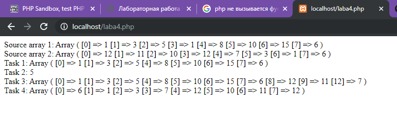

Создать два произвольных массива. Написать скрипт, который
- убирает все дублирущие элементы каждого массива;
- выводит количество дублирущих элементов двух массивов;
- сливает два массива в один, убирая все дублирующие значения;
- меняет местами значения массива (первый элемент массива становится последним, предпоследний - вторым, ..., последний первым). Использовать foreach.
Source code
